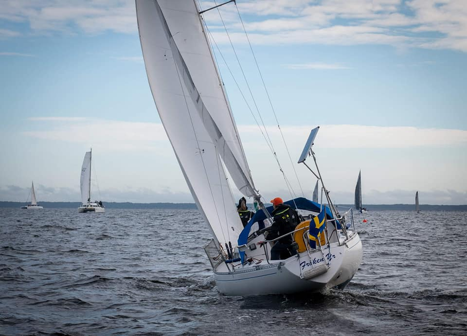

Парусный спорт является одним из интереснейших и загадочных видов спорта. Кто-то считает его ещё и самым дорогим видом спорта.
Я не буду развеивать миф насчёт дороговизны. Данная задача не по мне. Тот, кто хочет, то будет заниматься парусным спортом, тот найдёт и время и возможности.
Для остальных даже спортивная ходьба будет очень дорогим видом спорта.
Многие из нас очень часто заглядывались на яхты, скользящие по водной глади. Или наоборот, с зарифленными парусами борющимися со стихией.
И не важно, это вживую, или просто по телевизору.
Кто-то ломается и покупает прогулку на яхту, на пару часов. Кто-то попадает случайно к знакомым и познаёт прелести парусного спорта. И успокаивается (покатался и хватит/это не по мне/лучше кошек разводить буду (ничего против кошек не имею)
А кто-то целенаправленно идёт на курсы капитанов, покупает яхту здесь (или в Швеции) и с годами становится настоящим, просоленным капитаном.
Этот сайт для всех. В том числе и для тех, кто ещё ни разу не становился на палубу парусной яхты. Даст Бог, и у Вас всё сложится.
Я болен. Очень серъёзно. И эта болезнь называется парусный спорт. Кому-то нравится слово "Яхтинг". Но, как-то веет от него чем-то буржуйским. Спортом это тоже назвать сложно, так как регаты не являются моим основным занятием. Да, раза 3-4 за сезон позволяю себе гоняться. Где-то меня с дочкой уже узнают, и даже наверное считаются. И даже есть несколько значимых для нас трофеев. Но это не самое главное. Я просто люблю ходить под парусом. И самое главное, что моя семья меня в этом поддерживает. Со старшей мы гоняется уже с 2017 года. Иногда подклчается брат. Но в основном мы катаемся с семьёй. Так, на несколько часов выйти в залив, проветрить мозги и получить заряд энергии на несколько дней. В будущем, конечно, планрируется участие и младшей дочки. А там, чем чёрт не шутит, и жены. На английском есть достаточно ёмкое слово "SAILING". Означает просто хождение под парусами (в том числе и гонки). Спорт оставим для профессионалов - вот уж где дорого (реально дорого). И речь не идёт о "Volvo Ocean Race" или Rolex. Чтобы спортивный швербот ребёнка показывал более-менее приемлимые результаты, нужно очень много вложить. продолжение следует....